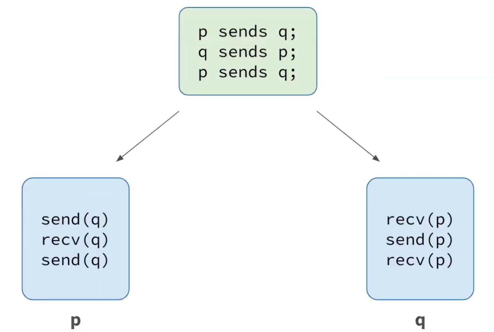
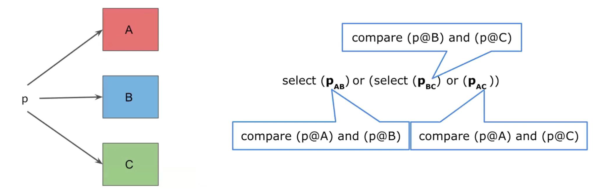
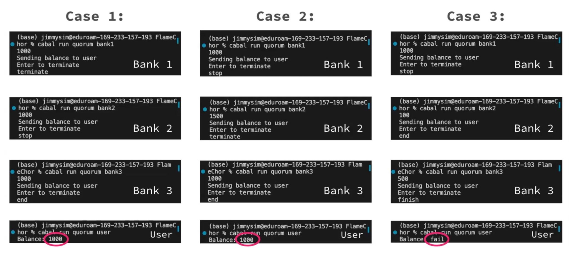

Building Secure Distributed Applications in Haskell
How can a distributed application keep working when its replicas fail or return conflicting values? During the 2024 Science Internship Program (SIP) at UC Santa Cruz, I worked with Allison Shi and Amy Vitek under the mentorship of Priyanka Mondal to explore this question in Haskell. Mondal was then a PhD candidate at UC Santa Cruz, advised by Prof. Owen Arden and Prof. Ioannis Demertzis.
We used choreographic programming to describe communication across participants in one program, then implemented a two-out-of-three majority quorum using two abstractions: compare and select. Our bank-balance example brought the ideas together in a program running across four terminals.
My work included the Haskell API and quorum implementation. I explained the comparison and selection logic, its integration into the bank example, and the three execution cases in our final research talk.
Coordinating communication
Replication addresses one weakness of a single-server system: if that server stops responding, the service becomes unavailable. Additional replicas can keep a service available, but they introduce a different question. When two replicas return different answers, which response should the application accept?
Before implementing a decision rule, we needed a way to express the participants’ communication reliably. In conventional message passing, each participant has its own program. A send at one endpoint must match a receive at another, including when execution takes different branches. A missing or mismatched operation can leave a participant waiting indefinitely.
A choreography describes the interaction globally. Endpoint projection derives the behavior of each participant from that shared description: one communication produces both a send and its corresponding receive. We used HasChor, a library that embeds functional choreographic programming in Haskell.

The scope of that guarantee matters. Coordinating sends and receives does not, by itself, make a failed computer respond or make an incorrect value trustworthy. Communication structure and fault-handling logic address different parts of the problem.
From two programs to one choreography
We first implemented a buyer–seller interaction in two forms: separate concurrent programs and a HasChor choreography. The buyer sends a book title, the seller computes its price, and the buyer checks that price against a budget. An accepted purchase leads to a delivery date; a declined purchase ends the interaction.
In the choreography, the initial exchange and budget check are expressed as follows:
title' <- (buyer, title) ~> seller
price <- seller `locally` \un -> return (priceOf (un title'))
price' <- (seller, price) ~> buyer
decision <- buyer `locally` \un -> return (un price' <= budget)- Located values:
titlebegins at the buyer. Sending it createstitle'at the seller. Writing a global program does not make every value available everywhere. - Local computation:
locallyidentifies where an operation runs. Itsunargument accesses values available at that location. - Communication:
~>sends a located value between participants, expressing both ends of the exchange in one operation. - Coordinated branching:
condcommunicates the buyer’s decision so the participants follow the corresponding purchase or decline branch.
The full choreography returns an optional delivery date located at the buyer, represented by Maybe Day @ "buyer". We demonstrated the buyer and seller in two terminals on the same machine, with logging to expose the messages and decisions.
Combining agreement and availability
The quorum example separates two operations that serve different purposes:
comparechecks agreement. When two responses agree, it produces their shared value. When they differ, it produces a failure value.selectobtains a successful result. It selects a result that is neither a failure value nor a timeout. This allows a successful comparison to supply the answer when another comparison fails.
select does not establish agreement on its own. We first compare every pair of replica responses—A with B, B with C, and A with C—then combine those comparison results using select. Any successful comparison represents two replicas agreeing on a value.

For example, responses of $1,500, $1,000, and $1,000 contain one agreeing pair. The quorum accepts $1,000. This is correct under the example’s assumption that at most one replica returns an incorrect value and the other two agree on the correct balance.
Putting the quorum into Haskell
Our application has four participants: user, bank1, bank2, and bank3, identified by Haskell proxies. Each bank reads a balance locally and communicates it to the user. The received values, b1, b2, and b3, are then available for the user’s local quorum computation.
comp1 <- user `locally` \un -> compare (un b1) (un b2)
comp2 <- user `locally` \un -> compare (un b2) (un b3)
comp3 <- user `locally` \un -> compare (un b1) (un b3)
sel1 <- user `locally` \un -> select (un comp1) (un comp2)
sel2 <- user `locally` \un -> select (un comp3) (un sel1)
user `locally` \un -> do
finalResult <- wait (un sel2)
putStrLn $ "Balance: " ++ finalResultThe three comparisons cover all pairs. The first selection combines the A–B and B–C results; the second combines that result with A–C. Finally, the user waits for the selected result and prints the balance. These are implementation excerpts, with surrounding declarations and setup omitted.
Haskell’s do notation lets the choreography compose communication and local computations in sequence. The located values keep the data flow explicit: balance retrieval happens at each bank, while the quorum decision happens at the user.
Three execution cases
We ran one terminal for each bank and one for the user. The three cases exercise unanimous agreement, agreement despite one conflicting response, and complete disagreement.
| Case | Bank 1 | Bank 2 | Bank 3 | User output |
|---|---|---|---|---|
| All agree | 1,000 | 1,000 | 1,000 | 1,000 |
| Two agree | 1,000 | 1,500 | 1,000 | 1,000 |
| None agree | 1,000 | 100 | 500 | fail |

The second run shows why pairwise comparison matters: two comparisons encounter conflicting values, but the remaining pair agrees on 1,000. In the third run, every pair disagrees, so selection cannot produce a majority balance and the program reports fail.
Scope of the demonstration
These runs demonstrate the quorum’s behavior for supplied balance values. They do not measure throughput, network latency, or behavior under arbitrary network failures. The disagreement cases use manually entered inputs rather than an actual attack on a bank service.
A majority establishes agreement, not truth by itself. Two replicas returning the same incorrect balance could outvote a correct third replica. The example also does not implement a full banking service or a general Byzantine consensus protocol. Its focus is composing communication and quorum operations with explicit assumptions about the replicas.
Research context
This was a team project completed with Allison Shi and Amy Vitek, mentored by Priyanka Mondal at UC Santa Cruz. Our work built on existing research in functional choreographic programming and fault-tolerant language abstractions.
- Gan Shen, Shun Kashiwa, and Lindsey Kuper. HasChor: Functional Choreographic Programming for All. ICFP, 2023. HasChor library.
- Priyanka Mondal, Max Algehed, and Owen Arden. Applying Consensus and Replication Securely with FLAQR. IEEE CSF, 2022.
- FlameChor, the research library referenced by our project, integrates fault-tolerant features and flow-limited authorization with choreographic programming.